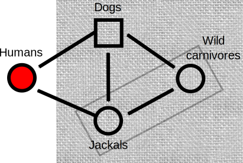
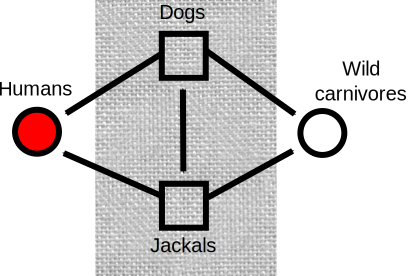
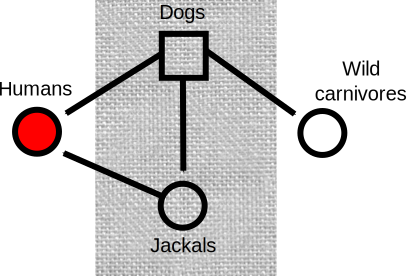

Maintenance=Jackals+wild carnivores
Maintenance=Jackals+wild carnivores

Maintenance=Jackals only
Maintenance=Jackals only

Maintenance=Dogs
Maintenance=Dogs
Dept. of Veterinary Medicine, University of Cambridge
Diseases of infectious origin whose incidence in humans has increased within the last two decades or threatens to increase in the near future.
CDC (1994)
An infectious disease whose incidence is increasing following its first introduction into a defined host population, or an infectious disease whose incidence is increasing in a defined host population as a result of long term changes in its epidemiology.
Woolhouse and Dye (2001)
Any disease which can be transmitted to humans from animals.
Oxford English Dictionary
Diseases or infections which are naturally transmitted between vertebrate animals and humans.
WHO (1959)
A population which is chronically infested with the causative agent of a disease and can infect other populations.
Oxford English Dictionary
An ecological system in which the infectious agent survives indefinitely.
Ashford, R.W. (1997) Belgian J Zoology 127:85
One or more epidemiologically connected populations or environments in which the pathogen can be permanently maintained and from which infection is transmitted to the defined target population.
Haydon et al. (2002)